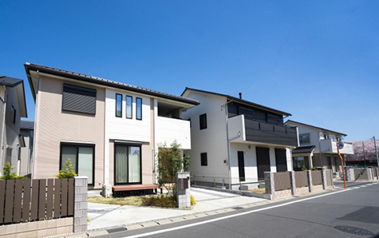

早く売りたい
- ホーム
- 早く売りたい
早く売りたい
相模原市・厚木市で不動産を早く売りたい方には、不動産会社が直接購入する「買取」が適している場合があります。アイモットでは、代表の楠本が売却期限や住宅ローン、相続、住み替えなどの事情を整理し、価格とスピードの両面から進め方をご提案します。
急いでいる状況でも、条件を十分に確認し、納得できる売却を目指すことが大切です。
不動産を早く売りたい方には買取がおすすめです
買取とは、不動産会社が買主となり、物件を直接購入する売却方法です。一般の購入希望者を探す販売活動が不要なため、仲介と比べて短期間で売却しやすい特徴があります。相続した不動産を早く整理したい方、住み替えの期限が決まっている方、住宅ローンの返済に不安がある方など、売却スピードを重視する場合に適した選択肢です。
買主を探す期間が
必要ありません
仲介では、物件情報を公開し、購入希望者からの問い合わせや内覧を待つ必要があります。買取では、不動産会社が査定後に購入条件を提示するため、一般の買主を探す期間がありません。条件に合意できれば契約へ進めるため、売却完了までの見通しを立てやすくなります。引越しや相続手続きなど、期限が決まっている方にも向いています。
売却時期を
調整しやすい方法です
買取は、不動産会社と売主の間で引き渡し時期を調整しやすい点も特徴です。「新居への入居後に引き渡したい」「相続税の納付期限までに整理したい」など、売主の予定を踏まえた相談ができます。
ただし、希望するすべての条件が通るとは限りません。売却希望日を早めに伝え、契約や決済に必要な期間を確認しておきましょう。
仲介と買取では売却の進め方が異なります
仲介と買取では、買主、販売活動、売却価格、売却期間が異なります。仲介は幅広い購入希望者を探せるため、高値での売却を目指しやすい方法です。
一方、買取は売却価格が低くなる傾向がありますが、短期間で進めやすく、内覧対応などの負担も抑えられます。何を優先するかを整理し、状況に合う方法を選びましょう。
※表は左右にスクロールして確認することができます。
| 比較項目 | 仲介 | 買取 |
|---|---|---|
| 買主 | 個人・法人・投資家など | 不動産会社 |
| 売却価格 | 市場価格に近い価格を目指しやすい | 仲介より低くなる傾向 |
| 売却期間 | 買主が見つかるまで時間が必要 | 比較的短期間 |
| 販売活動 | 広告や内覧を実施する | 原則として不要 |
| 仲介手数料 | 原則として必要 | 原則として不要 |
| 向いている方 | 価格を重視したい方 | 早さを重視したい方 |
買取が向いている主なケース
買取は、単に急いでいる場合だけでなく、一般の購入希望者へ売りにくい不動産にも向いています。築年数が古い戸建て、室内に荷物が残っている物件、長期間使用していない空き家なども相談できる可能性があります。
また、広告を出さずに進めやすいため、周囲に知られず売却したい場合にも検討しやすい方法です。
相続した不動産を
早く整理したい
相続した実家や空き家は、所有している間も固定資産税や管理費、維持管理の負担が続きます。相続人が遠方に住んでいる場合や、複数の相続人で遺産を早く分けたい場合は、買取による現金化が選択肢になります。ただし、相続登記や遺産分割協議が必要なこともあります。権利関係を確認し、必要な手続きを整理してから進めましょう。
住み替えの期限が決まっている
新居の購入や入居日が決まっている場合、現在の住まいがいつ売れるか分からないことは大きな不安になります。買取であれば、売却時期や受け取れる金額の見通しを早めに立てやすくなります。新居の購入費用や住宅ローンとの調整も含め、住み替え全体のスケジュールを整理することが重要です。
離婚や共有名義の不動産を整理したい
離婚時の財産分与や共有名義の解消では、不動産を現金化し、分けやすい状態にすることが求められる場合があります。早期売却を優先することで、話し合いを進めやすくなることもあります。ただし、共有者全員の同意や住宅ローンの扱いなど、確認すべき点があります。感情面にも配慮しながら、手続きと条件を整理することが大切です。
住宅ローンの返済に困っている
住宅ローンの返済が難しくなった場合は、できるだけ早く状況を整理する必要があります。滞納が続くと、売却方法や期限が限られてしまう可能性があります。
買取で早く売却できる場合もありますが、売却代金でローンを完済できるかの確認が必要です。残高が売却価格を上回る場合は、任意売却など別の方法も含めて検討します。
空き家や古い建物を現状で売りたい
長期間使用していない空き家や築年数の古い建物は、修繕や清掃に費用がかかることがあります。買取では、物件の状態によっては現状のまま相談できる可能性があります。売主が先にリフォームや解体をおこなうよりも、費用と時間を抑えられる場合があります。工事を進める前に、そのままの状態で査定を受けることが大切です。
買取で早く売るメリット
買取の大きなメリットは、売却までの期間を短縮しやすいことです。さらに、広告や内覧が原則として不要で、売主の負担を抑えやすい点も特徴です。物件の状態によっては、室内の荷物を残したまま相談できることもあります。
ただし、対応できる条件は不動産会社によって異なるため、査定時に確認が必要です。
広告や内覧の
負担を抑えられます
仲介では、物件情報サイトへの掲載や購入希望者の内覧対応が必要です。居住中の場合は、内覧のたびに室内を整え、予定を調整しなければなりません。
買取は不動産会社が物件を確認して購入を判断するため、何度も内覧対応をおこなう負担を抑えられます。仕事や介護などで時間を確保しにくい方にも検討しやすい方法です。
周囲に知られず進めやすくなります
買取は、物件情報サイトやチラシなどで広く広告を出さずに進められる場合があります。近隣の方や知人に売却を知られたくない方にとって、大きなメリットです。離婚、住宅ローン、相続などの事情を周囲へ知られたくない場合にも相談しやすい方法です。
ただし、登記情報などから売却後の所有者変更を完全に隠すことはできません。
契約後の予定を立てやすくなります
買取では、価格や引き渡し条件に合意できれば、契約と決済の日程を具体的に決めやすくなります。
売却時期が読めることで、引越し、相続人への分配、住宅ローンの返済など、その後の予定を立てやすくなります。特に期限がある場合は、契約までの日数だけでなく、決済や引き渡しまでに必要な期間も確認しましょう。
仲介手数料が原則としてかかりません
不動産会社が直接買主となる買取では、売主と買主を仲介する取引ではないため、原則として仲介手数料はかかりません。ただし、登記費用、印紙税、住宅ローンの一括返済手数料など、別の費用が必要になることがあります。売却価格だけで比較せず、必要な費用を差し引いた手取り額を確認することが重要です。
買取で注意したい
ポイント
買取は早く売りやすい方法ですが、すべての売主に適しているわけではありません。一般的には、買取後の修繕費や再販売にかかる費用などを見込むため、仲介よりも売却価格が低くなる傾向があります。
また、不動産会社によって査定基準や契約条件が異なります。価格とスピードだけでなく、引き渡し条件や費用まで確認しましょう。
仲介より売却価格が低くなる傾向があります
買取をおこなう不動産会社は、購入後にリフォームや解体、再販売などをおこないます。その費用やリスクを見込んで購入価格を算出するため、仲介による売却価格より低くなることが一般的です。
急ぐ必要がない場合は、仲介で一定期間販売し、売れなければ買取へ切り替える方法もあります。期限と価格の優先順位を整理して判断しましょう。
査定価格だけでなく手取り額を確認する
高い買取価格が提示されても、売主側で残置物の処分や測量、解体などが必要な場合は、最終的な手取り額が減ります。反対に、査定価格が少し低くても、荷物の処分や修繕を含めて対応してもらえる方が負担を抑えられることがあります。
提示価格に含まれる条件を確認し、売却に必要な費用を差し引いて比較しましょう。
契約条件を十分に確認する
買取では、引き渡し時期、残置物の扱い、境界確定の必要性、契約不適合責任などを確認します。「そのまま売却できる」と説明を受けても、すべての物件で同じ条件になるとは限りません。契約後の追加費用や負担を防ぐため、誰が何をどこまで対応するのかを書面で確認することが大切です。
早く売るために事前に準備したいこと
買取は短期間で進めやすい方法ですが、売主側の準備が整っていなければ、契約や引き渡しが遅れることがあります。特に、所有者の確認、住宅ローン残高、相続登記、共有者の同意は重要です。査定を依頼する前に分かる範囲で整理し、必要な書類を早めに準備しましょう。
所有者と共有者を確認する
不動産は、登記上の所有者が売却手続きをおこないます。共有名義の場合は、原則として共有者全員の同意が必要です。相続した不動産で名義変更が済んでいない場合は、相続登記を先に進める必要があります。登記事項証明書や権利証を確認し、誰の同意と手続きが必要なのかを整理しましょう。
住宅ローン残高を確認する
住宅ローンが残っている場合は、金融機関へ連絡し、現在の残高や一括返済に必要な手続きを確認します。売却代金がローン残高を下回る場合は、差額を用意できるか、任意売却を検討する必要があるかを判断します。返済が厳しい場合は、滞納が続く前に相談することで、選択肢を確保しやすくなります。
必要書類を早めにそろえる
買取では、登記識別情報、本人確認書類、固定資産税納税通知書、測量図、確認済証、住宅ローン関係書類などを使用します。物件種別や状況によって必要書類は異なります。
紛失している書類がある場合も、代替手続きができることがあります。まずは手元にある書類を確認し、不足分を早めに把握しましょう。
買取を依頼する不動産会社の選び方
早く売りたいときほど、査定額や契約条件を十分に比較する必要があります。「すぐに買い取る」という説明だけで決めると、想定より手取り額が少なかったり、後から追加対応が必要になったりする可能性があります。物件の状態や売主の事情を確認し、価格と条件の両方を分かりやすく説明してくれる会社を選びましょう。
買取価格の根拠を説明してくれるか
買取価格は、周辺相場、物件の状態、修繕費、再販売に必要な費用などをもとに算出されます。提示された価格が高いか低いかだけではなく、どのような根拠で算出されたのかを確認しましょう。
物件のマイナス面だけでなく、立地や土地の形状など、評価できる点も説明してくれる担当者であることが大切です。
追加費用や売主の
負担を確認する
残置物の処分、測量、解体、登記、修繕などの費用を誰が負担するのかによって、売主の手取り額は変わります。査定時には、提示価格から差し引かれる費用がないかを確認しましょう。「現状のまま買取」とされている場合も、どこまでが現状に含まれるのかを書面で明確にしておく必要があります。
急がせず選択肢を
示してくれるか
売主が急いでいる状況でも、すぐに契約を求める会社には注意が必要です。仲介、買取、買取保証などの違いを説明し、それぞれのメリットと注意点を比較できる担当者へ相談しましょう。期限を守ることは大切ですが、売主が納得しないまま進める必要はありません。判断に必要な情報を整理してくれる会社を選ぶことが重要です。
不動産を早く売却するために

不動産を早く売るためには、買取を選ぶだけでなく、所有者、住宅ローン、相続登記、引き渡し条件などを早めに整理することが重要です。売却価格は仲介より低くなる傾向がありますが、販売期間や内覧の負担を抑え、売却後の予定を立てやすくなります。価格とスピードの優先順位を確認し、納得できる方法を選びましょう。
早期売却に向けて状況を整理します
アイモットでは、早く売ることだけを目的にせず、売主様の事情と売却後の生活まで踏まえて進め方を考えます。代表が直接お話を伺い、買取、仲介、買取保証などの選択肢を比較しながら、期限に合う方法をご提案します。相模原市・厚木市で不動産の早期売却を検討している方は、複雑な事情がある場合もご相談ください。